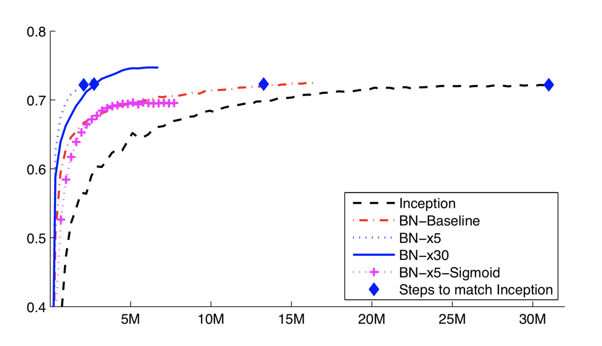

归一化层
在网络设计中，为了提高模型的泛化能力和收敛速度，常常会使用归一化层（Normalization Layer）。其主要作用是将输入数据进行归一化处理，使得模型更加稳定和可靠。
归一化层主要解决两个问题：
-
梯度消失问题：深度神经网络中，由于层数较多，梯度会逐渐消失或爆炸，导致模型无法收敛或收敛速度非常慢。归一化层通过对输入数据进行归一化处理，使得数据的分布更加稳定，从而避免了梯度消失问题，加速模型的收敛速度。
-
数据分布问题：深度神经网络中，输入数据的分布通常是不规则的，这会导致模型的学习过程非常困难，甚至无法收敛。归一化层通过对输入数据进行归一化处理，使得数据的分布更加规则，从而使得模型更加稳定和可靠。
归一化层的思想
如果模型的输入特征不相关且满足标准正态分布 ， 网络的训练会变得容易且效果变好。所以在处理数据时，我们一般会对输入标准化。而BN的目标就是对网络参数也进行标准化处理。 但是随着网络训练的进行，网络隐藏层间的特征分布已经发生了偏移，又因为前面层的参数会影响后面层，所以通过层层叠加，很容易导致高层的输入分布剧烈。 因此bn的思路就是不断的将网络参数进行标准化，更重要的是，处理完之后需要利用优化变一下方差大小和均值位置，使得新的分布更切合数据的真实分布，保证模型的非线性表达能力。 为实现该目的，BN需要通过学习合适的\gamma, \beta 来自我修正新参数的分布。
归一化层通常有以下几种类型：批归一化层（Batch Normalization）、实例归一化（Instance Normalization）、层归一化（Layer Normalization）、组归一化（Group Normalization) 几种归一化方式如下图所示，每个矩形表示一个尺寸为(B,C,H,W)的特征图。蓝色表示不同的归一化方式通过哪些局部特征计算均值方差。所以不同归一化操作的区别仅仅在于选取哪部分特征标准化并学习新的均值和方差。
接来下我们将对几种归一化方式进行一一介绍，如果您觉得容易混淆，那你只需要先学习批归一化即可。
批归一化
批归一化（Batch Normalization， BN）是最常用的归一化方式，具体计算过程包含如下三步。
1、参数预定义 定义输入 及 需要学习的参数 定义输出
2、沿C维度对每个batch的数据进计算均值
3、沿C维度对每个batch的数据进计算方差
4、对每个特征进行归一化处理，即将每个特征减去其均值，再除以其标准差。
5、对每个特征进行缩放和平移操作，即将每个特征乘以一个缩放因子，再加上一个偏移量。
使用BN后其对比效果如下图所示

可以看出其可达到两个收益：1）收敛速度变快， 2）训练精度变高。
目前在绝大多数网络设计中BN已经成为了标配。但BN有一个较为明显的缺点，其对批次数较为敏感。 BN的计算需要依赖于batch size，较小的batch size可能导致BN效果不稳定，因此需要采用较大的batch size才能获得较好的效果。 但与此同时，较大的batch size也会增加计算和存储的成本。
批归一化层的pytorch定义如下
torch.nn.BatchNorm2d(num_features, eps=1e-05, momentum=0.1, affine=True)
num_features 表示特征数，即输入的通道C数量 affine: 默认为True,学习仿射参数
使用代码如下
# With Learnable Parameters
m = nn.BatchNorm2d(100)
# 输入形状为 [N,C,H,W]
input = torch.randn(20, 100, 35, 45)
# 输出形状为 [N,C,H,W]
output = m(input)
实例归一化
实例归一化是对一个样本的特征图进行归一化。对于一个大小为 CxHxW 的特征图，
-
首先计算每个通道上的均值和标准差，得到一个 Cx1x1 的均值向量和一个 Cx1x1 的标准差向量。
-
对于特征图中的每个像素，将其减去对应通道的均值，并除以对应通道的标准差，得到一个归一化后的像素。
-
对于归一化后的像素，将其乘以一个缩放因子，再加上一个偏移量，得到最终的输出。
相对于批归一化，实例归一化可以更好地保留每个样本的特征信息，因此在一些特定的应用场景中，如图像风格迁移、图像生成等，实例归一化更加适用。
实例归一化层的pytorch定义如下
torch.nn.InstanceNorm2d(num_features, eps=1e-05, momentum=0.1, affine=True)
组归一化
组归一化的主要思想是将输入特征图分为多个组（group），对每个组内的特征图进行归一化处理。。具体来说，组归一化的计算过程如下：
-
将输入特征图分为 G 个组，每个组包含 C/G 个通道。
-
对于每个组，计算其所有像素的均值和标准差，得到一个 C/Gx1x1 的均值向量和一个 C/Gx1x1 的标准差向量。
-
对于特征图中的每个像素，将其减去对应组的均值，并除以对应组的标准差，得到一个归一化后的像素。
-
对于归一化后的像素，将其乘以一个缩放因子，再加上一个偏移量，得到最终的输出。
实例归一化层的pytorch定义如下
torch.nn.GroupNorm(num_groups, num_channels, eps=1e-05, affine=True, device=None)
- num_groups (int): 从通道中选择的组数量
- num_channels (int) – 输入的通道数
实例归一化层的pytorch用法如下
import torch
import torch.nn as nn
input = torch.randn(20, 6, 10, 10)
# eg1: 将6个通道分为3个组
m = nn.GroupNorm(3, 6)
output = m(input)
# eg2: 将6个通道分为6个组 (相当于 InstanceNorm)
m = nn.GroupNorm(6, 6)
output = m(input)
# eg3: 将6个通道分为1个组 (相当于 LayerNorm)
m = nn.GroupNorm(1, 6)
output = m(input)
# Activating the module
层归一化
层归一化相对较为特别，他主要用于对循环神经网络中的每个时间步的特征进行归一化。具体来说，层归一化的计算过程如下：
-
对于一个大小为 TxHxWxC 的特征图，首先计算每个时间步上所有像素的均值和标准差，得到一个 Tx1x1xC 的均值向量和一个 Tx1x1xC 的标准差向量。
-
对于特征图中的每个像素，将其减去对应时间步的均值，并除以对应时间步的标准差，得到一个归一化后的像素。
-
对于归一化后的像素，将其乘以一个缩放因子，再加上一个偏移量，得到最终的输出。
层归一化更适用于循环神经网络，可以更好地处理循环神经网络中时间步的依赖关系，同时也可以提高模型的泛化能力和性能。这点将在NLP领域表现的更为突出。